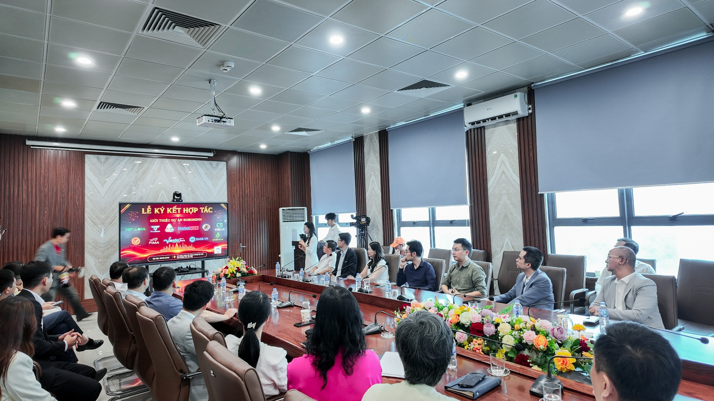

ARTECH Robotics góp mặt tại sự kiện kết nối công nghệ và đổi mới sáng tạo
Ngày 08/05/2026, ARTECH Robotics vinh dự tham dự Lễ ký kết hợp tác chiến lược do Công ty Robominh tổ chức tại Sở Khoa học và Công nghệ Thành phố Hà Nội. Sự kiện quy tụ đông đảo lãnh đạo các cơ quan quản lý, đại diện doanh nghiệp, chuyên gia công nghệ cùng nhiều đơn vị hoạt động trong lĩnh vực khoa học, kỹ thuật và chuyển đổi số.
Chương trình được tổ chức với mục tiêu thúc đẩy hoạt động hợp tác giữa các doanh nghiệp công nghệ, mở rộng cơ hội kết nối nguồn lực và tăng cường ứng dụng các giải pháp đổi mới sáng tạo vào thực tiễn. Đây đồng thời là diễn đàn quan trọng để các đơn vị chia sẻ kinh nghiệm, giới thiệu thành tựu nghiên cứu và tìm kiếm cơ hội phát triển trong bối cảnh nền kinh tế số đang phát triển mạnh mẽ.
Sự kiện không chỉ mang ý nghĩa kết nối mà còn thể hiện quyết tâm của cộng đồng doanh nghiệp trong việc xây dựng hệ sinh thái công nghệ Việt Nam ngày càng vững mạnh, góp phần nâng cao năng lực cạnh tranh của doanh nghiệp trong nước trên thị trường.
.jpg)
Dấu ấn đặc biệt của ARTECH Robotics tại chương trình
Trong khuôn khổ sự kiện, ARTECH Robotics đã mang đến sản phẩm Robot Mascot AI trò chuyện thông minh tích hợp nhiều tính năng tương tác hiện đại, có khả năng đóng vai trò như một lễ tân thông minh hỗ trợ đón tiếp khách mời, hướng dẫn thông tin và giao tiếp trực tiếp với người tham dự do chính đội ngũ kỹ sư của công ty nghiên cứu, phát triển và sản xuất. Đây là lần đầu tiên sản phẩm được giới thiệu rộng rãi trước đông đảo khách mời, đối tác và doanh nghiệp tham dự chương trình.
Với khả năng tương tác trực tiếp, giao tiếp tự nhiên và hỗ trợ nhiều tình huống ứng dụng khác nhau, chiếc robot do công ty nghiên cứu sản xuất và phát triển đã nhanh chóng trở thành điểm sáng ấn tượng nhất của sự kiện, thu hút sự quan tâm và trải nghiệm của đông đảo đại biểu tham dự. Nhiều đại biểu đã trực tiếp trải nghiệm các tính năng của sản phẩm và đánh giá cao tiềm năng ứng dụng trong lĩnh vực truyền thông thương hiệu, dịch vụ khách hàng, sự kiện và quảng bá doanh nghiệp.
Sự xuất hiện của robot không chỉ thể hiện năng lực nghiên cứu và phát triển công nghệ của ARTECH Robotics mà còn khẳng định định hướng xây dựng các giải pháp robot ứng dụng thực tiễn, phù hợp với nhu cầu của thị trường Việt Nam.
.jpg)
Hành trình phát triển Robot Mascot AI “Made in Vietnam”
Trong những năm gần đây, nhu cầu ứng dụng robot trong hoạt động kinh doanh, truyền thông và chăm sóc khách hàng ngày càng gia tăng. Nhận thấy xu hướng đó, ARTECH Robotics đã tập trung đầu tư vào nghiên cứu và phát triển các dòng Robot Mascot AI mang tính cá nhân hóa cao, giúp doanh nghiệp tạo ra những trải nghiệm mới mẻ cho khách hàng.
Khác với các giải pháp robot nhập khẩu được thiết kế theo tiêu chuẩn chung, robot do ARTECH Robotics phát triển được xây dựng dựa trên nhu cầu thực tế của doanh nghiệp Việt Nam. Từ ngoại hình, khả năng tương tác đến nội dung giao tiếp đều có thể được tùy chỉnh để phù hợp với từng thương hiệu, từng chiến dịch truyền thông và từng mục tiêu sử dụng cụ thể.
Việc làm chủ công nghệ từ khâu thiết kế, chế tạo đến lập trình giúp ARTECH Robotics chủ động nâng cấp sản phẩm, tối ưu chi phí và tạo ra những giải pháp có tính ứng dụng cao. Đây cũng là nền tảng quan trọng để công ty từng bước hiện thực hóa mục tiêu phát triển các sản phẩm robot mang dấu ấn “Made in Vietnam”, góp phần nâng cao vị thế công nghệ Việt trên thị trường.
.jpg)
Mở rộng cơ hội hợp tác và ứng dụng công nghệ vào thực tiễn
Việc tham dự Lễ ký kết hợp tác chiến lược lần này không chỉ mang ý nghĩa giới thiệu sản phẩm mà còn mở ra nhiều cơ hội kết nối giữa ARTECH Robotics với các doanh nghiệp, tổ chức và đối tác trong hệ sinh thái công nghệ.
Thông qua các hoạt động giao lưu, trao đổi tại sự kiện, ARTECH Robotics có cơ hội tiếp cận thêm những nhu cầu thực tế từ thị trường, đồng thời tìm kiếm các mô hình hợp tác nhằm thúc đẩy quá trình ứng dụng robot vào nhiều lĩnh vực khác nhau như bán lẻ, giáo dục, y tế, du lịch, dịch vụ khách hàng và truyền thông thương hiệu.
Đây được xem là bước đi quan trọng trong chiến lược phát triển dài hạn của công ty, hướng tới mục tiêu đưa robot trở thành công cụ hỗ trợ hiệu quả cho doanh nghiệp trong quá trình chuyển đổi số và nâng cao trải nghiệm khách hàng.

Khẳng định năng lực công nghệ và tầm nhìn phát triển bền vững
Sự hiện diện của ARTECH Robotics tại chương trình một lần nữa khẳng định năng lực nghiên cứu, thiết kế và chế tạo robot của đội ngũ kỹ sư trong nước. Đây không chỉ là thành quả của quá trình đầu tư nghiêm túc vào công nghệ mà còn là minh chứng cho tinh thần đổi mới sáng tạo mà công ty luôn theo đuổi.
Trong thời gian tới, ARTECH Robotics sẽ tiếp tục đẩy mạnh hoạt động nghiên cứu và phát triển các dòng robot ứng dụng trí tuệ nhân tạo, nâng cao khả năng tương tác và mở rộng phạm vi ứng dụng trong nhiều ngành nghề khác nhau. Công ty cũng đặt mục tiêu xây dựng hệ sinh thái robot thông minh phục vụ doanh nghiệp, góp phần thúc đẩy quá trình chuyển đổi số và phát triển kinh tế số tại Việt Nam.
Với định hướng lấy công nghệ làm nền tảng, lấy nhu cầu thực tiễn làm trung tâm và lấy đổi mới sáng tạo làm động lực phát triển, ARTECH Robotics cam kết không ngừng hoàn thiện sản phẩm để mang đến những giải pháp robot chất lượng, hiệu quả và phù hợp với nhu cầu ngày càng đa dạng của thị trường.
.jpg)